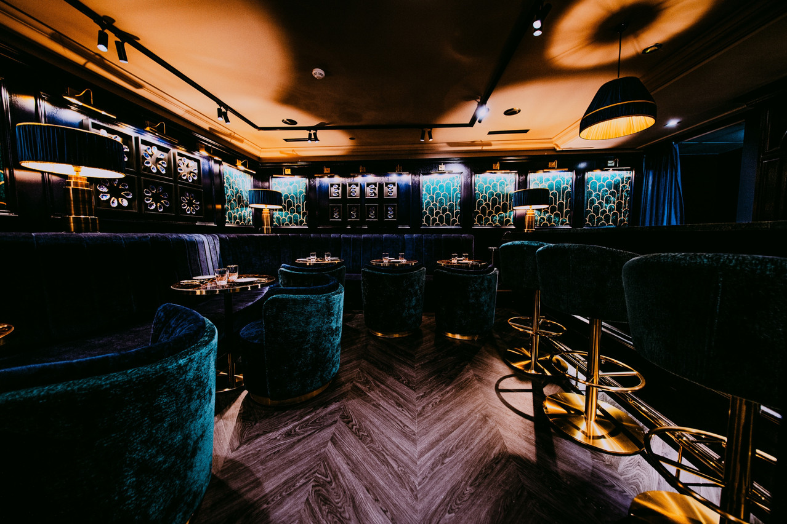
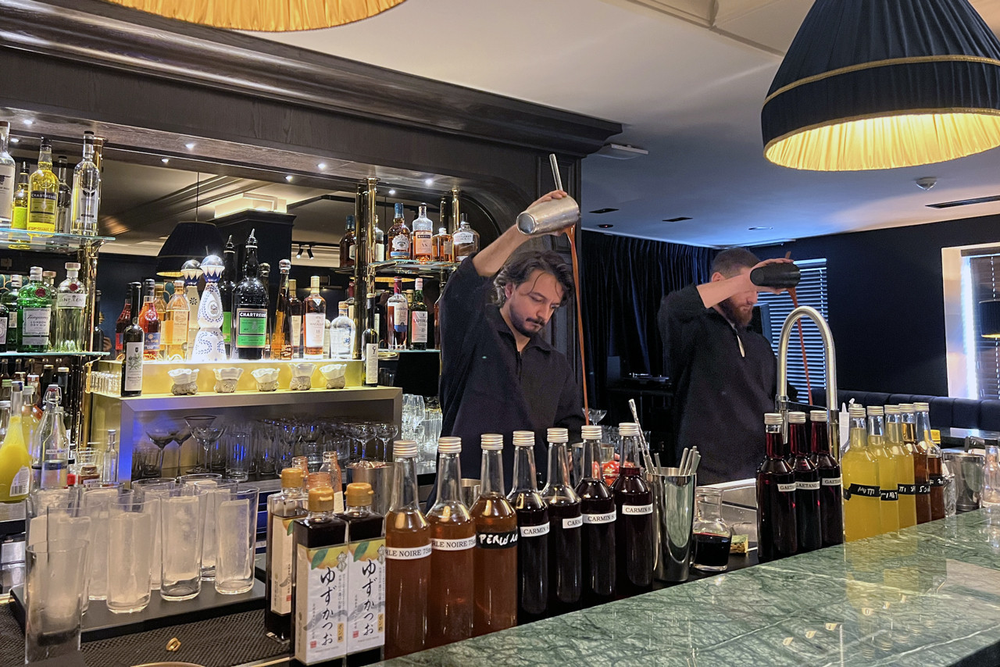
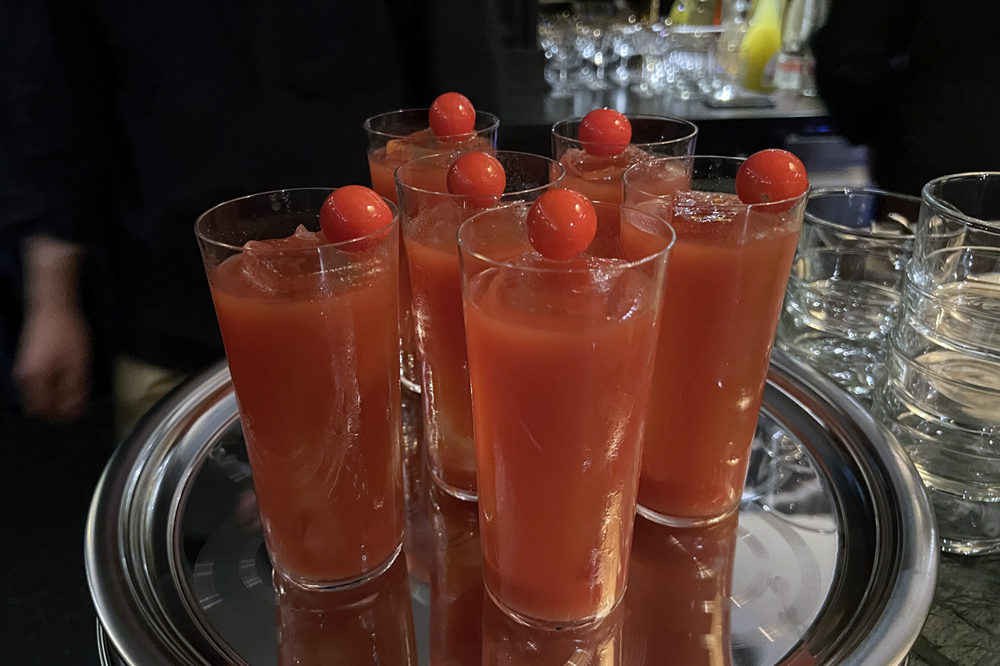
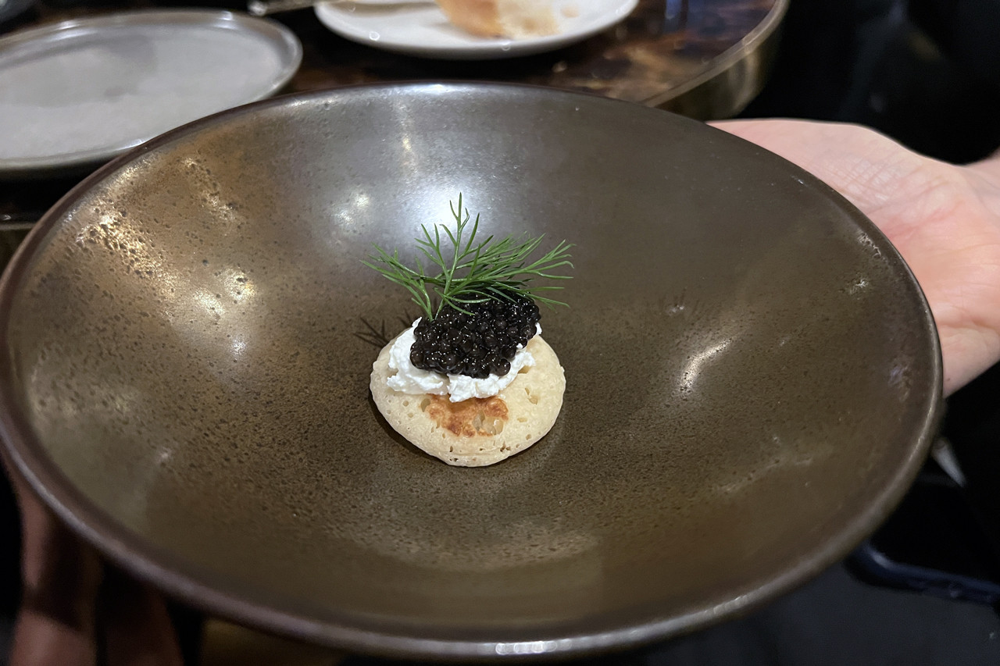
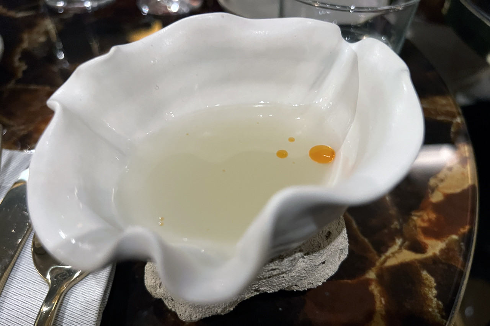
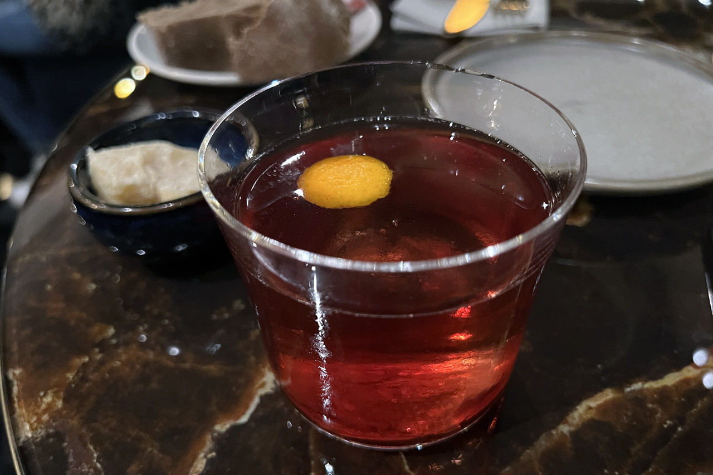
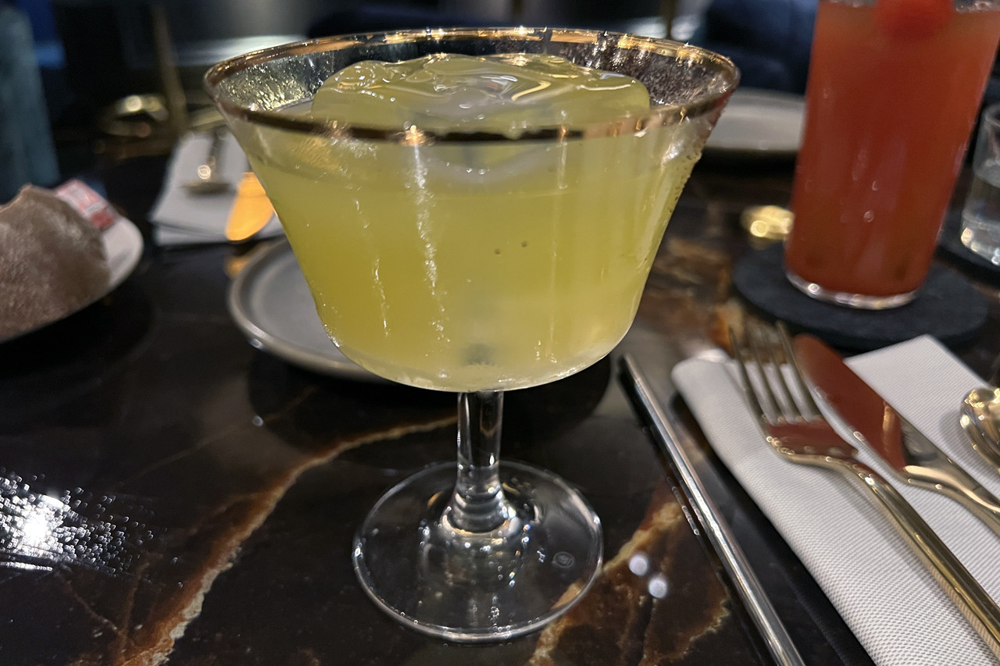
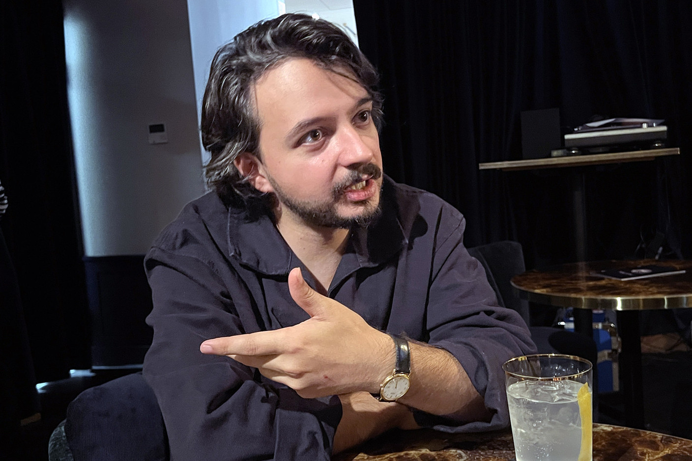

Tête — première impression
PERLENIRE
Rare par nature. Ouvert la nuit.
30 places · Quatre nuits · 7 Place d'Armes, Luxembourg

Élue Bar de l'Année 2026 par Gault&Millau — la distinction, posée, jamais criée.
Cœur
Cœur — le salon
Une salle de velours sombre, à la lueur des bougies
Au dernier étage de La Lorraine, sur la Place d'Armes : trente places, des lumières feutrées, des coquilles d'huîtres aux murs. Un écrin Art Déco pensé pour la nuit — intime, nocturne, discrètement rare.



Fond
Fond — préparez votre nuit
La note de fond : quand et où venir
Les nuits ouvertes
Mercredi → Samedi · 18h00 – 01h00
Lundi, mardi et dimanche fermés.
L'accès
Sans réservation — arrivez tôt
Walk-in only. Trente places, quatre nuits : la rareté fait partie du soir.
L'adresse
7 Place d'Armes, Luxembourg
Au-dessus de la brasserie La Lorraine · 1136 Luxembourg-Ville

Cœur — la composition
Des cocktails composés comme des parfums
Signatures 16 € · Classiques 18 € — touchez une carte pour découvrir la pyramide de notes.
Perle Noire
Lulu
Rouge
Ojo Verde
Naked & Famous
Sparkling Caramel
Côté table : planche de charcuterie et huîtres bretonnes, en partenariat avec un ostréiculteur breton.



Cœur — la main
Un passé de parfumeur, derrière le comptoir
Le chef barman, autodidacte venu de Nice, compose ses cocktails comme des créations olfactives : huiles essentielles, acidité mesurée, équilibre naturel.
La maison est dirigée par Louis Scholtès — formé chez Ferrandi, passé par Les Crayères à Reims et le Ritz à Paris — qui veille sur La Lorraine depuis 2022.
Ce soir
Voyez le bar, ce soir
Pas de réservation, pas de carte en ligne — la maison publie sa nuit sur Instagram. C'est là que vit la preuve.